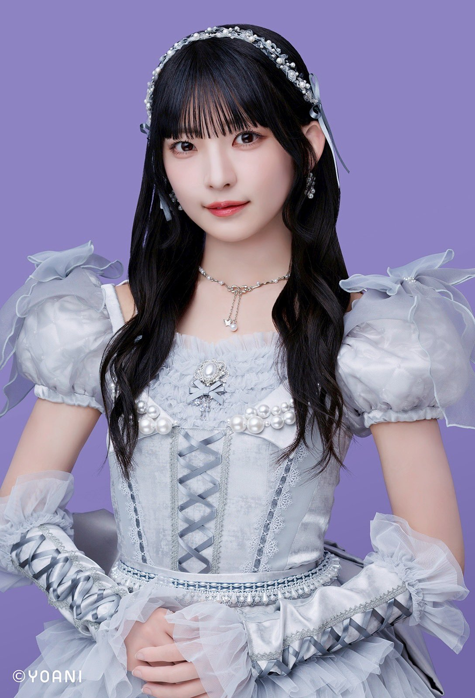
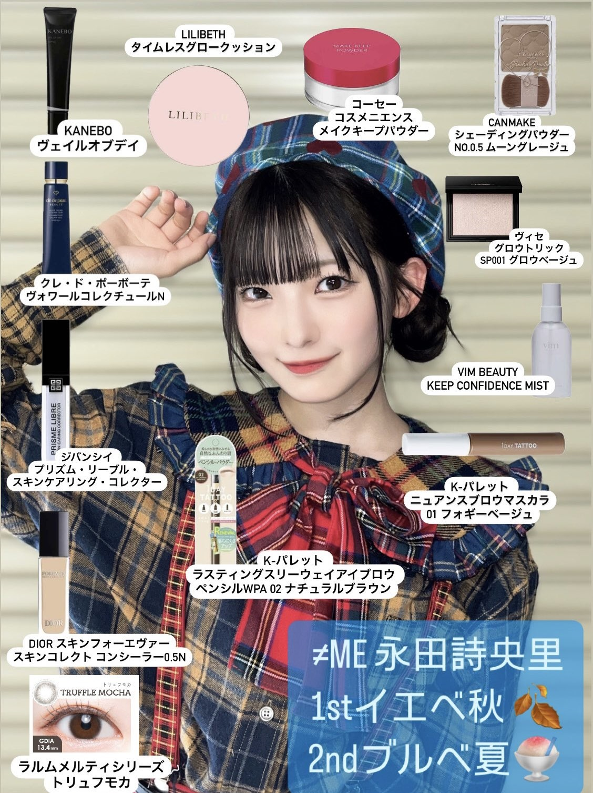
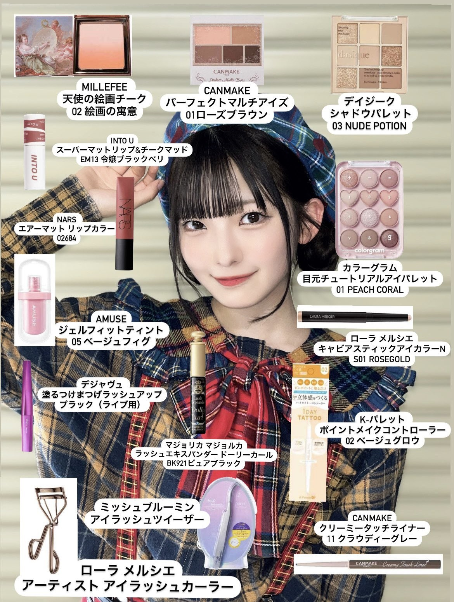

目次
気になる項目をタップ／クリックすると、その場所へ移動します。
プロフィール
このサイトは≠MEの永田詩央里（しおりん）ちゃん自身のことや、紹介してくれたものをまとめています。

- 生年月日：2004年4月2日
- 出身地：広島県
- 血液型：A型
- 身長：150.6cm
- サイリウムカラー：青 × 青
ラジオ
しおりんおすすめのラジオ番組や放送回をまとめます。
ラジオデータを読み込み中です...
本・ブログ
しおりんが紹介した本やお気に入りの書籍を紹介します。
- 小説TRIPPER（26/04/02 SHOWROOM）
- Olive（26/01/30 ≠ME 永田詩央里のけれけれ）
- 干魚と漏電（阿刀田高）（25/10/31 ≠ME 永田詩央里のけれけれ）
- 口の立つやつが勝つってことでいいのか（頭木 弘樹）（25/10/03 ≠ME 永田詩央里のけれけれ）
- ≠ME Walker、3周年記念本、声優パラダイス（2021年4月）（25/04/02 SHOWROOM）
- ほげちゃん （やぎた みこ）（25/04/02 SHOWROOM）
- 鬼と踊る（三田 三郎）（一番下まで落ちれるのでおすすめ）（24/12/31 SHOWROOM）
- へいきじゃないけどへいきだよ（大野 隆司）（24/12/31、24/06/18 SHOWROOM）
- 五月よ 僕の少年よ さようなら（作：寺山 修司 絵：宇野 亞喜良）（24/06/18 SHOWROOM）
- 「封じられた怪談 紫の本」、「追ってくる怪談 緑の本」、「呼んでいる怪談 青い本」（23/05/25 SHOWROOM）
- 黒魔女さんが通る!! 小学生の頃めっちゃ読んでいました（23/05/25 SHOWROOM）
- 内田百聞の随筆（23/04/02 SHOWROOM）
- とりかへばや物語 まだ読めてはいない（23/04/02 SHOWROOM）
- 上田啓太の雑念日記（23/05/23 SHOWROOM）
音楽
おすすめの楽曲やお気に入りアーティストなど。
Spotifyでプレイリスト化したものはこちら
音楽データを読み込み中です...
映画・ドラマ・動画
しおりんが好きな映画やドラマのリスト。
- ポンヌフの恋人（25/02/20 ≠ME 永田詩央里のけれけれ）
- ゆっくり今昔旅行（26/01/30≠ME 永田詩央里のけれけれ）
- 恋人強奪（1927）なっちゃんと無声映画の映画祭を見に行きました！（25/07/18 ≠ME 永田詩央里のけれけれ）
- Lie lie Lie（1997）（25/05/07 Instagramストーリーズ）
- 黒蜥蜴（1968）（25/07/04 ≠ME 永田詩央里のけれけれ、25/05/07 Instagramストーリーズ、24/12/31 SHOWROOM）
- マジすか学園２２～３周している（24/10/20 SHOWROOM）
- 14歳の栞（24/04/02 SHOWROOM）
- 池袋ウェストゲートパーク（24/03/19 FAV FOUR、23/10/15 SHOWROOM）
- ザ・スーパーマリオブラザーズ ももちゃんと見に行きました（23/12/23 SHOWROOM）
- THE FIRST SLAM DUNK（23/10/15 SHOWROOM）
- ＝LOVE Today is your Trigger THE MOVIE （23/10/15 SHOWROOM）
グルメ
しおりんおすすめの食べ物やお店情報。
- 甘いものが最近好きになってきた（26/04/02 SHOWROOM）
- 最近ハマっている食べ物は「ししとう」。たけや製パンのパン（粒あんグッディ、アベックトースト、コーヒー、学生調理）（25/08/29 ≠ME 永田詩央里のけれけれ）
- 稲庭うどん、食べてけれ～（佐藤養助商店）（25/08/15 ≠ME 永田詩央里のけれけれ）
- パンプキンパイ、金萬（25/07/04 ≠ME 永田詩央里のけれけれ）
- 好きな食べ物は、いちじく、ししとう、ペペロンチーノ（25/07/04 ≠ME 永田詩央里のけれけれ）
- スターバックスラテ（アイス）（エスプレッソ追加、低脂肪ミルク変更）、カプチーノ（アイス）（エスプレッソ追加、低脂肪ミルク変更）、ホワイトモカ（ショット追加、低脂肪ミルク変更、シロップ少なめ）、冬の時期はアールグレイティーラテ（ティーバック追加、ブレベミルク）（25/04/18 SHOWROOM）
- 好きな駄菓子は蒲焼さん太郎（25/04/18 SHOWROOM）
- お寿司やさんで頼むかきふらいが揚げたてが来るので好き（25/04/18 SHOWROOM）
- カルビがあまり食べられなくなった（胃もたれ）、タンとハラミが好き（25/04/18 SHOWROOM）
- チーズケーキを頼むことが多くなった、ベイクドがあればベイクド、コーヒーと一緒に、ザッハトルテもショートケーキもモンブランも好き（25/04/18 SHOWROOM）
- 好きなのは餃子といちじく（子どもの頃はわんこいちじくで消費する係）、水炊き、もつ鍋、ござそうろう、タバスコ、麻婆豆腐（25/04/02 SHOWROOM）
- カプチーノ詩季、サンドがおすすめ（25/04/02 SHOWROOM）
- たこ焼きは一口で食べたい（24/12/21イコノイジョイチャンネル）
- 干した梅干し、いちじく（幼少期にボールいっぱい食べていた）（24/10/20、25/04/18 SHOWROOM）
- 好きなピザトッピングはアンチョビ(24/10/05 ノイミーステーションTV)
- 明太もんじゃ（なっちゃんと食べに行きました）（24/08/09 のいみーのいみ。）
- うまかっちゃん（お母さんが送ってくれる）（24/06/03 ノイミーステーション）
- のむのむヨーグルト （酪王協同乳業株式会社）（24/05/06 Instagramストーリーズ）
- 好きな甘いものはチョコ、チーズケーキとコーヒー（24/04/14 SHOWROOM）
- 誕生日の日にはセラヴィのケーキを毎年食べる（26/04/02、25/04/02、24/04/02 SHOWROOM）
- 好きな寿司ネタはアジ、はまち、まぐろ、光物（24/04/02 SHOWROOM）
- ミスドで好きなのはオールドファッション、ハニーチュロ（24/04/02 SHOWROOM）
- オムライス、水炊き（はにゃちゃんの家で初めて食べた）（24/04/02 SHOWROOM）
- 一番好きなスイーツ ござそうろう（23/12/26 KING RECORDS TODAY）
- もつ鍋（３日に２回くらい）、赤からレベル５、一蘭の赤い粉は３倍（23/09/24 SHOWROOM）
- 珈琲亭ルアン（大森）（23/09/11 Instagram）
- Cafe Lumiere（吉祥寺）、萌ちゃんと食べに行った（23/07/23 SHOWROOM）
- もみじ屋（飯田橋）広島お好み焼き（23/06/24 SHOWROOM）
- ラドリオ（神保町） クリームソーダがかわいい（23/06/24 SHOWROOM）
- cafe DALI（品川）混んでいて行かれなかった（23/06/24 SHOWROOM）
- 特に好きなカフェチェーン店はCaffe Veloce（内装が暗くて好き）（アイスルイボスミントティーがおすすめ）、ドトール、タリーズ（カフェラテ）もスタバ（スターバックスラテ、チャイティーラテ、アールグレイティーラテにブレべミルクで冬の味）も猿田彦珈琲（カフェラテ）も好き（23/06/24 SHOWROOM）
- さぼうる（神保町）（23/06/24 SHOWROOM）
- blikje-button （下北沢）（23/06/24 SHOWROOM）
- 珈琲王城（上野）（23/06/24 SHOWROOM、23/04/07 Instagram）
- Jagabeeバターしょうゆ味（23/04/02 SHOWROOM）
- わらび餅にハマっていた、水で洗うとおいしい（ハマっていたのは22/04/29頃の話）（23/04/02 SHOWROOM）
メイク・ファッション
愛用しているコスメやメイク道具など


- メイクレシピ(24/09/10 X)
ヘア
- PRODUCTのヘアワックス ラベンダー（23/10/15 SHOWROOM）
化粧下地
- コスメデコルテのフローレススキングロウライザー（24/04/14 SHOWROOM）
マニキュア
- アナスイのピンクのマニキュア（24/04/02 SHOWROOM）
リップ
- Laka 102 デューイ（26/04/02 SHOWROOM）
- ウォンジョンヨのフォンダンリップ / 02 メルティングフィグ（フィグの色が好き）（24/12/31 SHOWROOM）
- Lakaのボンディンググロウリップスティック＃203（24/12/31 SHOWROOM）
- INTO U（恐らくスーパー マットリップ＆チークマッド）（24/04/02 SHOWROOM）
- GUERLAIN（24/04/02 SHOWROOM）
- Ririmewのシナモンナッツ（23/04/02 SHOWROOM）
コンシーラー
- ディオールスキン フォーエヴァー スキン コレクト コンシーラー 0.5N（24/04/14 SHOWROOM）
コンタクト
- MOLAKのバブルブルー🫧、普段のライブはmelotteのモアレディが多いよ～👀（25/02/26 X）
- LARMEのトリュフモカ （-3.50か-3.75）（24/12/31 SHOWROOM）
- Chu's meのメルティーココア（24/12/31 SHOWROOM）
- Chu's meのTEAR OLIVE 最近のお気に入り🫒(24/02/04 Instagram)
涙袋
- too cool for school アートクラス フロッタージュペンシル / #11 デュ―ベージュ（24/12/31 SHOWROOM）
- 最近のこだわりは涙袋（24/04/02 SHOWROOM）
シェーディング
- CANMAKEのシェーディングパウダー[05]ムーングレージュ（24/12/31 SHOWROOM）
アイシャドー
- DOLLY WINKのピュアカラーアイシャドウ （25/04/02 SHOWROOM）
ファッション
- みうらじゅんのSince Tシャツ（25/06/20 イコノイジョイチャンネル）
- NICE CLAUP NC刺しゅうハイネックニット(24/02/08 Instagram)
- メリージェニーTシャツ（23/09/24 SHOWROOM）
キャラクター
好きなキャラクター
- 家の玄関に土佐犬をいくつか置いている（25/06/20イコノイジョイチャンネル）
- 飛び出し坊や（25/07/04 ≠ME 永田詩央里のけれけれ、25/04/02 SHOWROOM、24/12/25ノイミーステーション）
- ちいかわはみんな好き、うさぎのシール（24/04/02 SHOWROOM）
- バッドばつ丸、ポムポムプリン（24/04/02 SHOWROOM）
- ピーポくん（24/04/02 SHOWROOM）
- ねこ（すみっこぐらし） 閉店間際の雑貨屋で目が合ってぬいぐるみ購入（24/04/02 SHOWROOM、24/02/02 のいみーのいみ。）
- シュガーバニーズ （23/12/23 SHOWROOM）
- げんきげんきノンタン（23/07/23、23/05/25 SHOWROOM）
- おさるのジョージ （23/07/23 SHOWROOM）
- ぼのぼの（24/04/02、23/05/25 SHOWROOM）
- スナドリネコ（23/05/24 Instagram）
- リロ＆スティッチ ぼろぼろ泣いちゃう（23/04/08 SHOWROOM）
- 機関車トーマス 尊敬している（23/04/08 SHOWROOM）
イベント・舞台・ミュージカル
イベント、舞台、ミュージカル、展示など
- 江戸糸あやつり人形結城座 伽羅先代萩（26/03/27 Instagramストーリーズ）
- アンチ・アクション（26/02/27 ≠ME 永田詩央里のけれけれ）
- コレクションを中心とした特集 記録をひらく 記憶をつむぐ（25/08/10 Instagramストーリーズ）
- 人形劇（25/02/06教えて、花便り、25/04/02、24/10/20 SHOWROOM）
- 宇野 亞喜良展 AQUIRAX UNO （24/06/18 SHOWROOM）
- 「田園に死す」すごすぎて終演後はしばらくクラクラしていました（24/03/18 Instagram）
- エドワード・ゴーリーを巡る旅 （23/12/23 SHOWROOM）
- みうらじゅん FESマイブームの全貌展（23/05/28 Instagram）
場所・スポット
しおりんが訪れた場所やおすすめスポット。
パーソン
しおりんが影響を受けた人物や仲の良いメンバー。
- アユニ・D 好きなものなど人生において影響を受けた人（25/03/12 ノイミーステーション）
- ９番街レトロ （23/10/15 SHOWROOM）
- 蟹沢萌子 人としてもアイドルとしても尊敬（23/04/08 SHOWROOM）
- みうらじゅん アイドル界のみうらじゅんを目指している（23/03/19 FAV FOUR、21/11/10 model press）
- 好きな芸人は「Aマッソ」「かまいたち」「ラーメンズ」 （21/04/16 ≠ME 先輩、も～っと教えてください!!♯1）
- 憧れのアイドルさんは岡田奈々（AKB48）さん、大場花菜（＝LOVE）さん（21/04/06 ORICON MUSIC）
アイテム
愛用アイテムやグッズ。
- ipone17 Pro Max（26/01/23 ≠ME 永田詩央里のけれけれ）
- バットばつ丸の充電器（25/04/02 SHOWROOM）
- ねないこだれだお部屋ライト（2024年のクリスマスプレゼント）(24/12/31SHOWROOM、24/12/25ノイミーステーション）
- 緑色のセンスある扇子（24/08/09 のいみーのいみ。）
- mozのペンケース（23/05/28 SHOWROOM）
- ハイテックCシリーズのボールペン（23/05/28 SHOWROOM）
メンバーの呼び方
ノイミーの他のメンバーのニックネーム。
(24/11/21 YouTube(イコノイジョイチャンネル))
尾木波菜：はなちゃん
落合希来里：きらりん
蟹沢萌子：もえちゃん
河口夏音：なっちゃん
川中子奈月心：なつみん
櫻井もも：ももきゅん
菅波美玲：(言及なし)
鈴木瞳美：ひぃちゃん
谷崎早耶：さややん
冨田菜々風：なんかちゃん
本田珠由記：みるてん
パーソナルデータ
永田詩央里ちゃん自身のデータ
- 使用している天気予報アプリは「NERV防災」（26/04/24 ≠ME 永田詩央里のけれけれ）
- カラオケで最近歌ったイコノイジョイ曲は「ラストノートしか知らない」「部活中に目が合うなって思ってたんだ」「記憶のどこかで」「月下美人」「オフショルニット」「誰森」「今日も君の夢を見たんだ」「笑ってフラジール」（26/04/02 SHOWROOM）
- 22歳の抱負は歯医者とかに行くこと（健康でいたいので）（26/04/02 SHOWROOM）
- 時計はAppleを使っています。（26/03/13 ≠ME 永田詩央里のけれけれ）
- 色々なサブスクに入っていることでおなじみの永田詩央里！（25/11/07 ≠ME 永田詩央里のけれけれ）
- 小学生の頃、学芸会でボール役を演じたことがあります（25/08/15 ≠ME 永田詩央里のけれけれ）
- エアコンの設定温度は23度（25/08/02 ≠ME 永田詩央里のけれけれ）
- 特技は「片足でずっと立ち続けられること」（25/04/27 バズリズム02）
- 過去のXのポストは恥ずかしくなるのでリポストはほどほどに…（25/04/18 SHOWROOM）
- 2025年の抱負は「止まらない」「諦めない」（25/04/02 SHOWROOM）
- 隙間を埋めるように「るん」と言ってしまう（25/04/02 SHOWROOM）
- コンタクトの度数は-3.5か-3.75（25/04/02 SHOWROOM）
- 猿腕、耳が折れている（25/04/02 SHOWROOM）
- チャームポイントは右えくぼと、口角（New！メンバーに言ってもらえる）（25/04/02 SHOWROOM）
- 冬でも暖房をつけずにどこまでいけるか挑戦している（25/01/29 ノイミーステーション）
- 眠くないけど寝たい時は、片目ずつ寝ている（25/01/29 ノイミーステーション）
- 片目が乱視（24/12/31 SHOWROOM）
- 2025はアコギで弾き語りしたい、ベースのレッスンに通いたい（24/12/21イコノイジョイチャンネル）
- 睡眠導入で鉄板焼き屋の動画を見る（24/12/21イコノイジョイチャンネル）
- オリーブベージュに初めて髪を染める（染めたのは23/10くらい）（24/10/20 SHOWROOM）
- ベース練習中→苦戦中、ギターも弾きます（24/10/20 、24/04/02 SHOWROOM）
- 緊張をほぐす時には体を叩く(24/10/05 ノイミーステーションTV)
- スマホは100％の段階から低電力モード（24/08/09 のいみーのいみ。）
- やっていたゲームはWii Party（24/06/11 ノイミーステーション）
- 中学校では吹奏楽部（オーケストラ部？）に所属、ファゴットを担当（24/04/14 SHOWROOM、22/04/26 OCSDインタビュー）
- 目覚ましの音に気が付かない（24/04/11教えて、花便り）
- ハマるまではいってないけど、気になるもの「ショウガラゴの赤ちゃん」（24/04/11教えて、花便り）
- 20歳に、お腹から声を出して、堂々と、ゆっくりと話したい（24/04/02 SHOWROOM）
- 崎陽軒みたいな大人になりたい（シウマイ弁当が有名なのにしょうが焼弁当を販売していることを踏まえて）（24/04/02 SHOWROOM）
- 最近ハマっている言葉「人には人の○○」、「人は誰かによって成り立っている」（24/04/02 SHOWROOM）
- 掃除が苦手、皿洗いは好き（24/04/02 SHOWROOM）
- 右手にますかけ線（25/04/02、24/12/31、24/04/02 SHOWROOM）
- MBTIは恥ずかしいので内緒（I ふんふんふんふん T）（24/04/02 SHOWROOM）
- パーソナル診断 1stイエベ秋 2ndブルベ夏 骨格 ウェーブ （24/01/29 X）
- 流行っている口癖は「だぽ～」（最後まで言わずに裏声っぽく）（23/12/31 SHOWROOM）
- 右投げ左打ち（始球式は右、MVのバッセンは左）（23/12/23 SHOWROOM）
- 2024年の目標は「オーラを身につけること」（23/12/22 TVガイドweb）
- 好きな英単語は「negligence」（23/10/15 SHOWROOM）
- 靴のサイズは22.5か23.5、ワイドタイプ（25/07/11 ≠ME 永田詩央里のけれけれ、23/09/24 SHOWROOM）
- 理想の大人像は「ご機嫌な大人」（25/10/03 ≠ME 永田詩央里のけれけれ、23/06/12 TVガイドweb）
- ノートを取るときはボールペン派（23/05/28 SHOWROOM）
- 自分の映像や声を見たり聞いたりするのは苦手（23/05/28 SHOWROOM）
- 超が付く夜型人間だが、朝型に憧れがある（23/05/25 SHOWROOM）
- 19歳は「アイドルとしての進化を大事にしたい」（23/04/02 SHOWROOM）
- アイドルになった理由の大きな１つが、「コールをしている人をステージから見てみたい」（23/04/02 SHOWROOM）
広島
しおりんの地元、広島に関する情報。
Googleマップに落としました！
- 尾道 マイ・オアシス！猫ちゃんがたくさんいます。とってもいいところです！！（23/05/21 SHOWROOM）、
- 喫茶定食キツネ雨 行ってみたい！（23/06/24 SHOWROOM）
- はっさく大福（23/05/28 SHOWROOM）
- shodai bio natureのマカロン（広島駅北口）（23/05/28 SHOWROOM）
- 宮島 牡蠣、もみじ饅頭（揚げ）、星の砂 （23/05/21 SHOWROOM）
- 本通り 東京の新宿・渋谷・原宿がぎゅっとなったような場所場所（23/05/21 SHOWROOM）
- とうかさん （23/05/21 SHOWROOM）
- マリオデザート フルーツタルト、ショートケーキ（23/05/21 SHOWROOM）
- 蔦屋家電 放課後よく行っていた（23/05/21 SHOWROOM）
- お好み焼き 八昌（しおりん未訪）、みっちゃん、電光石火 （23/05/21 SHOWROOM）
- ゆめタウン（23/05/21 SHOWROOM）
- 広島駅横の川付近のベンチ セブンで買ったガトーショコラを買ってぼーっとしてました、思い出の地（23/05/21 SHOWROOM）
- まんが図書館 AKB0048を全巻読破！（23/05/21 SHOWROOM）
- 鞆の浦 行ったことが無いので、行ってみたい（23/05/21 SHOWROOM）
- ちからのうどん（23/04/08 SHOWROOM）